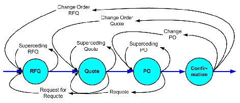
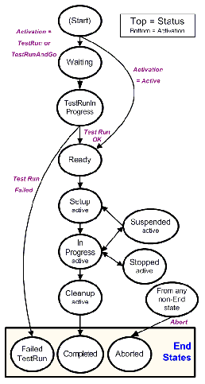
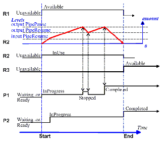
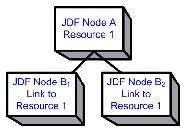
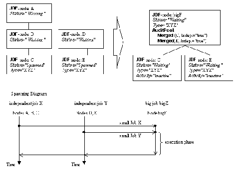

This chapter describes the life cycle of a JDF Job, from creation through modification to processing. Information is provided about the spawning of individual steps of Jobs and in what way they are merged into the Job once the Process step is completed. Ancillary aspects of the life cycle, such as test running and error handling, are also discussed.
The life cycle of a JDF Job will likely follow one of two scenarios. In the first scenario, a Job is created all at once by a single Agent and then is consumed by a set of Devices. More often, however, a Job is created by one Agent and is then transformed, or modified, over time by a series of other Agents. This Process might require specification of Product Intent, which is defined in Section 4.1.1, “Product Intent Constructs”.
Jobs can be modified in a variety of ways. In essence, any Job is modified as it is executed, since information about the execution is logged. Another instance of modification of a JDF Job, however, occurs during processing when more detailed information is learned or understood and then added along the way. This information might be added because an Agent knows more about the processing needed to achieve some result specified in a JDF Node than the original, creating Agent knew. For example, one Agent might create a Product Intent Node that specifies the Product Intent of a series of pages. This Product Intent Node might include information about the number of pages and the paper properties. Another Node might then be inserted that includes a Resource describing how the pages are to be RIPed. Later, another Agent might provide more detail about the RIPing Process by appending optional information to the RIP Parameter Resource .
Regardless of where in the life cycle they are written, Nodes and their Resources must be valid and include all required information in order to have a Status of Ready (in case of Nodes) or Available (in case of Resources). This restriction allows for the definition of incomplete Output Resources. For example, a URL Resource without a file name might be completed by a Process. On the other hand, it is impossible to define a valid and executable Node with insufficient input parameters.
Once all of the inputs and parameters for the Process requested by a Node are completely specified, a Controller can route the JDF Job containing this Node to a Device that can execute the Process. When the Process is completed, the Agent/Controller in charge of the Device will modify the Node to record the results of the Process.
JDF Jobs, in essence, are requests made by customers for the production of quantities of some product or products. In other words, a Job begins with a particular goal in mind. In JDF, product goals are often specified by using a construct called “Product Intent” and represented by Intent Resource s. In contrast to Process Resources that define precise values, Intent Resource s allow ranges or sets of preferred values to be specified. Resources of this kind include ColorIntent , FoldingIntent , MediaIntent and ShapeCuttingIntent , all of which are described in Section 7, “Resources”.
The Product Intent of a Job is like a blue print of a product. The blue print might be extremely vague, detailing only the general goal, or it might be very specific, stipulating the specific requirements inherent in meeting that goal. Product Intent might be defined for an end product about which little is known or about which the processing details for the Job are entirely unknown. Product Intent constructs also allow Agents to describe Jobs that comprise multiple product components and that might share some parts.
The initiating Agent of a Job specifies either Product Intent or a full set or Processes. The various kinds of Process Nodes are described in Section 3.3.1, Section 3.3.2, and Section 3.3.3. Any Job that specifies Product Intent must include Nodes whose Type = Product . This representation is described in the following section.
The product description of a Job is a hierarchy of Product Intent Nodes, and the bottom-most level of the product hierarchy represents portions of the product that are each homogeneous in terms of their materials and formats. All Nodes below these Product Intent Nodes begin specifying the Processes needed to produce the products.
Product Intent Nodes are required to contain only one thing, and that is a Resource that represents the physical result specified by the Node. This Resource is generally a Component . In addition, somewhere in the hierarchy of Product Intent Nodes, it is a good idea to include an Intent Resource to describe the characteristics of the intended product. Although these are the only Resources that should occur, Product Intent Nodes can contain multiple Resources. For example, some Resource types, such as LayoutIntent and MediaIntent , are defined to provide more general mechanisms to specify Product Intent. The resulting product of a Product Intent Node is specified as an output Component Resource of the Product Intent Node.
In some cases, more than one high level Product Intent Node will use the output of a Product Intent Node. These high level Nodes represent the combination of homogeneous product parts. In this case, the Amount Attribute of the ResourceLink Elements that connect the Nodes will identify how the lower level product is shared.
Some Intent Resource s, such as BindingIntent or InsertingIntent , define how to combine multiple products. To accomplish this, the respective Component Resources must be labeled according to their usage. For example, the Cover and Insert Attributes use the ProcessUsage Attribute of the respective ResourceLink Elements. For more information about Product Intent, see Section 3.3.1, “Product Intent Nodes”.
Business objects like requests-for -quote , quote, invoice, etc. need to reference Processes at a level that is well represented by Product Intent Nodes. It is assumed that business object metadata such as financial information, business document type, customer information, etc. is defined by an XML envelope that contains JDF as a Job description. If this is not the case, the business related metadata may be placed into the root NodeInfo / BusinessInfo Resource, and the customer related data may be placed into the root CustomerInfo Resource.
This section sketches the usage of JDF in an E- commerce environment using the business object model that was defined by the PrintTalk [PrintTalk] consortium and is being maintained by CIP4.
The following table describes the individual business objects and their relationships. “Object type” defines the name of the XML element that defines the metadata. All object types are inherited from the abstract PrintTalk Request Element. “References” defines the business objects that are responded to when generating the business object, and the “buyer-provider” arrow defines the direction of the transaction.
In the following figure the workflow of these business objects is partly illustrated in a simplified manner. See the PrintTalk specification [PrintTalk] for a complete picture.
|

|
The Node that defines an RFQ must contain one or more DeliveryIntent Resources that define the amounts and methods of delivery. The Usage of the ResourceLink Elements is Input , its Type is Product and the Business object is an RFQ .
This example and Example 4-2 use an object model as defined by PrintTalk with the business objects defined in BusinessInfo . This does not preclude the use of other E -commerce systems. This example shows PrintTalk. The highlighted tags and highlighted attributes show the respective position of an RFQ.
< PrintTalk xmlns = "http://www.printtalk.org/schema" >
< RFQ AgentDisplayName = "Lara Garcia-Daniels" AgentID = "Lara"
BusinessID = "RFQ_ID" Currency = "EUR" Estimate = "false"
Expires = "2002-04-15T1700- 0800"
RequestDate = "2002-04-05T1700-0800" >
< jdf:JDF xmlns:jdf = "http://www.CIP4.org/JDFSchema_1_1"
JobID = "ScreenJob" Status = "Waiting" Type = "Product"
This example shows pure JDF document text that is equivalent to the PrintTalk shown in Example 4-1. The highlighted tags and highlighted attributes show the respective position of an RFQ.
< JDF xmlns = "http://www.CIP4.org/JDFSchema_1_1" ID = "ScreenTest"
JobID = "ScreenJob" JobPartID = "ScreenJob100" Status = "Waiting"
Type = "Product" Version = "1.4" >
< NodeInfo ID = "ID122" Class = "Parameter" Status = "Available"
LastEnd = "2000-12-24T06:02:42+01:00" >
< pt:RFQ xmlns:pt = "http://www.printtalk.org/schema"
AgentDisplayName = "Lara Garcia-Daniels" AgentID = "Lara"
Currency = "EUR" Estimate = "false"
Expires = "2002-04-15T1700- 0800"
RequestDate = "2002-04-05T1700-0800" />
< Component ID = "ID123" Class = "Quantity" Status = "Unavailable"
< ComponentLink Usage = "Output" rRef = "ID123" />
< NodeInfoLink Usage = "Input" rRef = "ID122" />
A Job can define one or more products and specify a set of deliveries of end products. To accomplish this, a Node JDF [@ Type = "Product" ] is created to define each product to be produced. The root Product Intent Node should contain a DeliveryIntent Resource that specifies a set of Drop Elements. Each Drop Element has a common delivery address and time, and a set of DropItem Elements that specifies the amount of individual Component Elements to deliver to this address. Quote generation as defined in the previous chapter includes the specification of delivery addresses. For more information, see Section 6.2.4, “Delivery”.
Product Intent Nodes are designed to represent a customer’s view of the product. In some instances, a knowledgeable customer might want to specify production details that are only available in JDF Process Resources for a given product. Examples include scanning or screening parameters. This customer will still have no knowledge or control of the Process workflow. and therefore is expected to specify only the Resource Elements.
Individual JDF Process Resources may be referenced from the ProductionIntent Resource. Resource /@ Status will most likely be "Incomplete" because generally the customer does not know all parameters of the Resource .
The highlighted tags and highlighted attributes section shows how specific information about screening is specified in an intent Node.
< JDF xmlns = "http://www.CIP4.org/JDFSchema_1_1" ID = "Job1" JobID = "J1"
Status = "Waiting" Type = "Product" Version = "1.4" >
< Component Amount = "10000" Class = "Quantity"
DescriptiveName = "Complete 16-page Brochure" ID = "Link0003"
Status = "Unavailable" ComponentType = "Sheet" />
< LayoutIntent Class = "Intent" ID = "Link0004" Status = "Available" >
< Dimensions DataType = "XYPairSpan" Preferred = "612 792"
Range = "576 720 ~ 648 864" />
< Pages DataType = "IntegerSpan" Preferred = "16" />
< MediaIntent Class = "Intent" ID = "Link0005" PartIDKeys = "Option"
< FrontCoatings DataType = "NameSpan" Preferred = "None" />
< FrontCoatings DataType = "NameSpan" Preferred = "Glossy" />
< BackCoatings DataType = "NameSpan" Preferred = "None" />
< ProductionIntent Class = "Intent" ID = "ID_PI" Status = "Available" >
< ScreeningParamsRef rRef = "ScreenID" />
< ScreeningParams Class = "Parameter" ID = "ScreenID" Status = "Incomplete" >
< ScreenSelector ScreeningFamily = "My favorite screen"
< ComponentLink Usage = "Output" rRef = "Link0003" />
< LayoutIntentLink Usage = "Input" rRef = "Link0004" />
< MediaIntentLink Usage = "Input" rRef = "Link0005" />
A Controller in a JDF workflow system has two tasks. The first is to determine which of the Nodes in a JDF document are executable, and the second is to route these Nodes to a Device that is capable of executing them. Both of these procedures are explained in the sections that follow.
In a distributed environment with multiple Controllers and Devices, finding the right Device or Controller to execute a specific Node might be a non-trivial task. Systems with a centralized, smart master Controller might want to route Jobs dynamically by sending them to the appropriate locations. Simple systems, on the other hand, might have a static, well defined routing path. Such a system might, for example, pass the Job from hot folder to hot folder. Both of these extremes are valid examples of JDF systems that have no need for additional routing metadata.
In order to accommodate systems between these extremes, the NodeInfo Resource of a Node contains optional Route and TargetRoute Attributes that let an Agent define a static Process route on a Node-by-Node basis. JMF / QueueSubmissionParams /@ ReturnURL takes precedence over NodeInfo /@ TargetRoute of the JDF Node that is processed. If no Route or TargetRoute Attribute is specified and if a Controller has multiple options where to route a Job, it is up to the implementation to decide which route to use.
The Controller or Device reading the JDF Job is responsible for processing the Nodes. A Device examines the Job and attempts to execute those Nodes that it knows how to execute, whereas a Controller routes the Job to the next Controller or Device that has the appropriate capabilities.
In order to determine which Node to execute, the Controller/Device must use the following procedures.
The Node will go through various states during its life time as is described in Figure 4-2.
|

|
JDF syntax supports two means of distributing Processes to work centers or Devices. Its first option is to use a “smart” Controller that has the ability to parse a JDF Job and identify individual Processes or Process Groups that might be distributed to a particular Work Center or Device. This smart Controller may use spawning and merging facilities to subdivide the Job ticket and pass specific instructions to a Work Center or Device.
The second option, which is applicable when the Controller being used isn’t smart, is to employ a simple Controller implementation that routes the entire Job to each workcenter or Device, thus leaving it up to the recipient to determine which processing it can accomplish. For this option to work, each JDF-capable Device must be able to identify Process Nodes it is capable of executing. Furthermore, each Device must have sufficient JDF-handling capabilities to identify Processes that are ready to run.
The method used to determine which is the appropriate Device or lower level Controller to use to execute a given Node depends greatly on the implemented workflow being used. Although JDF provides a method for storing routing information in the Route Attribute of the NodeInfo Resource of a Node, it does not prescribe any specific routing methods. However, some of the tools available to figure out alternative workflows are described below.
Knowledge of the capabilities of lower level Controllers/Devices either may be hard-wired into the system or gained using the KnownDevices Message. Since JDF does not yet provide mechanisms to determine if a given Device is capable of processing a Node without actually performing a test run, a Controller must either have a prior knowledge of the detailed capabilities of its controlled Devices or perform a test run to determine if a Device is capable of executing a Node. Furthermore, in addition to the explicit routing information in the Route Attribute of the NodeInfo Resource of a Node, JDF may contain implicit routing information in the form of Device Implementation Resource s.
JMF defines the KnownControllers Query Message to find Controllers and the KnownDevices Query Message to find Devices that are controlled by a Controller. The information provided by these queries can be used by a Controller to infer the appropriate routing for a Node. In a system that does not support messaging, this information must be provided outside of JDF.
JDF provides a range of options that help Controllers tailor a processing system to the needs of the workflow and of the Job itself. The following sections explain the ways in which Controllers execute processes using these various options.
The processing model of JDF is based on a producer/consumer model, which means that the sequencing of events is controlled by the availability of Input Resources. As has been described, Nodes act both as producers and consumers of Resources. When all necessary inputs are available in a given Node, and not before, the Process can execute. The sequence of processing, therefore, is implied by the chain of Resources in which the Output Resources of one Node become the Input Resources of a subsequent Node.
JDF supports four kinds of Process sequences: serial processing, overlapping processing, parallel processing and iterative processing. All four are described in the following sections.
The simplest kind of Process routing, known as serial processing, executes Nodes sequentially and with no overlap. In other words, no Nodes are executed simultaneously. Once the Process has acted upon the Resource in some way, the Resource availability is described by the Status Attribute of the Resource, as described above. When the Process state is Ready or Waiting , the Process can begin executing.
In a workflow using serial processing, the Controller is responsible for comparing the actual amount available with the specified amount in the corresponding PhysicalLink Element to determine whether or not the Input Resource can be considered available. If no amount is specified in the PhysicalLink , the Process is assumed to consume the entire Physical Resource .
Figure 4-3 depicts a simple Process chain that produces and consumes Quantity Resource s and uses an Implementation Resource . The Resources R1, R2 and R3 represent Quantity Resource s. Process P1 consumes Resource R1 and produces Resource R2. R2 is then completely consumed by P2 , which also requires the Implementation Resource R4 for processing. Process P2 uses these two Resources and produces Resource R3. All of this is accomplished along a linear time axis.
Table 4-2 shows the value of the Status Attribute of each of the Resources and Processes used in Figure 4-3 . The time axis runs from left to right both in Figure 4-3 and in Table 4-2. Note that no Process can execute until all Resources leading up to that Process are Available . In other words, the Job executes serially and sequentially. For more information about the values of the Status Attribute of Resources, see Table 3-10, “Abstract Resource Element”. For more information about the values of the Status Attribute of Processes, see Table 3-5, “JDF Node”.
If a Process aborts before completion, its Output Resources are Unavailable unless the output has been partially produced in which case the Device may update the amount and set the output to Available .
When the Amount Attribute is used in connection with the quantifiable Resources R1, R2 or R3 and their links, then the Controller must decide whether or not a Resource is available by comparing the individual values. If the amounts are used to define the availability, then the Resource Status may be set to Available for all Quantity Resource s. Note that when the value of the Status Attribute of the Resource is Unavailable , the Resource is not available even if a sufficient Amount is specified.
If amounts are specified in the Resource Element, they represent the actual available amount. If they are not specified, the actual amount is unknown, and it is assumed that the Process will consume the entire Resource. Amounts of PhysicalLink Elements must be specified for Output Resources that represent the intended production amount. The specification of the Amount Attribute for Input Resources is optional . For details, see Section 3.10.4, “Resource Amount” . If the Controller cannot determine the amounts, this constitutes a JDF content error, which is logged by error handling. This Process is described in Section 4.6, “Error Handling”.
If a Process in a serial processing run does not finish successfully, the final Process status is designated as aborted . In an aborted Job, only a part of the intended production might be available. If this occurs, the actual produced amount is logged into the AuditPool by a ResourceAudit Element.
JDF Nodes themselves must not be Partitioned, although the input and Output Resources may be Partitioned. If the input and output ResourceLink Elements reference one or more individual Partitions, the JDF Node executes using only the referenced Resources.
If multiple Input Resources are input to a process, the Resource with the highest granularity defines the Partitioning. For instance, a ConventionalPrinting Process might consume a non-Partitioned ConventionalPrintingParams and a set of Ink and ExposedMedia ( Plate ) Resources that are Partitioned by Separation . The Partition granularity will be defined by the Ink and ExposedMedia ( Plate ) Resources to be Separation . The Separation Partition set is defined by the superset of all defined Partition Key values. If the Separation key values of Ink were Black and Varnish , and the Separation key values of ExposedMedia ( Plate ) were Black , the resulting set is Black and Varnish .
The Partition Keys of both input and output restrict the Process. If the Partition Keys are not identical, both must be applied to restrict the Node. If the Partition Keys are non-overlapping (e.g., in an Imposition Node where a RunList based input Partition is mapped to a Sheet based output Partition), the application must explicitly calculate the result. The following examples in Table 4-3 illustrate the restriction algorithms:
|
If only the input is Partitioned, the Node Partition is defined by the input. |
||||
|
If only the input is Partitioned, the Node Partition is defined by the input. |
||||
|
The first input is Partitioned by SheetName and Separation which defines the Partition Key granularity. The second input is Partitioned by Separation only but has an implied SheetName and has a larger but overlapping set of separation values. The separation value set is therefore defined by the second key. |
||||
|
The input and output base Partitions are identical. The output further restricts the Partition. |
||||
|
Input and output are not overlapping. This specifies the null set. |
||||
|
This is an error and defines the null set. The first input is Partitioned by SheetName and Separation which defines the Partition Key granularity. The second input is Partitioned by Separation only and has a larger but non-overlapping set of separation values. The separation value set is therefore the null set. |
||||
|
The first input is Partitioned by SheetName and Separation which defines the Partition Key granularity. The second input is Partitioned by Separation only but has no implied SheetName and therefore has a non-overlapping set of Partition Keys. The separation value set is therefore defined by the second key. |
||||
|
This specifies Sheet s2, with all PlacedObject Elements with an Ord in the range of 0 to 7. This special case is important when RunList entries occur multiply on different imposition Sheets. |
Whereas pipes themselves are identified in the Resource that represents the pipe, pipe dynamics are declared in the ResourceLink Elements that reference the pipe. This allows multiple Nodes to access one pipe, each of them with its own pipe buffering parameters.
In some situations, Resource linking is a continuous Process rather than a chronological one. In other words, one Process might require the Output Resources of another Process before that Process has completely finished producing them. The ability to accomplish this kind of Resource transfer is known as overlapping processing, and it is accomplished with the use of a mechanism known as pipes. Pipes are considered to be active if any Process linking to the pipe simultaneously consumes or produces that pipe Resource.
Any Resource may be transformed into a pipe Resource by specifying the PipeID Attribute in the Resource. Pipes of quantifiable Resources resemble reservoir containers that hang between Processes. Processes connected to the pipe via output links fill the container with necessary Resources, while Processes connected via input links deplete it (see Figure 4-4 ). The level is controlled by the PhysicalLink Attributes PipeResume, PipePause , RemotePipeEndPause and RemotePipeEndResume (see Table 3-21, “Abstract PhysicalLink or //AmountPool/PartAmount Element”). If none of them are specified, any produced Quantity can be immediately consumed by the consuming end of the pipe. The unit of the buffers is defined by the Unit Attribute of the Resource.
The two following diagrams show the ways in which pipes mediate between the Process producing the Resource and the Process consuming the Resource. The following optional Attribute Values are defined for pipes:
The latter two-- RemotePipeEndPause and RemotePipeEndResume-- are use to control the level in context with pipe Command Messages which will be described in Section 4.3.3.2, “Dynamic Pipes” . The specified value of each of these Attributes in any given Node dictates the levels at which a pipe should resume or pause execution. Figure 4-5 gives an example of a view on the dynamics of a pipe Resource. The available level of the pipe Resource, represented as R2, and the availability status of two entity Resources, represented as R1 and R3, are changing along a consistent time line. Below the progressions of these Resources is the status of two Processes -- P1 and P2 . P1 represents the Process producing the pipe Resource and P2 represents the Process consuming that Resource. The Resource status of a active pipe, represented here as R2, is defined to be Status = InUse (see also Table 3-10, “Abstract Resource Element”).
Figure 4-4 is a view on the structure and Figure 4-5 a view on the dynamics of the pipe example considered here. R1 represents an Input Resource for P1, which feeds into the intermediate pipe Resource R2. Once the container R2 is filled to the predetermined level, it is used as the Input Resource for P2, which in turn produces Output Resource R3.
|

|
Resource linking through pipes is controlled through the specification of the PipePause and PipeResume Attributes. The intended amount of a Resource must be specified in advance in the output ResourceLink . Whenever the level representing the available quantity of the pipe Resource exceeds the PipePause level of the output ResourceLink , the Process P1 is halted ( Status = Stopped ) so that the Process does not overproduce. Once the level falls below the PipeResume value, the Process P1 resumes execution. P1 is completed when it has produced the intended amount. Once P1 has performed its task, the Resources still in the pipe are consumed by the subsequent Process without level control. In other words, after a Process filling a pipe buffer has completed, pipe buffering becomes disabled.
Conversely, if the level representing the actual amount exceeds the PipeResume level of the input ResourceLink , P2 can start or resume execution. If it falls below the PipePause level, P2 is halted ( Status = Stopped ) unless the intended amount of the pipe Resource R2 has already been produced. Then the PipePause level is ignored and the pipe Resource is completely consumed.
In the case of output ResourceLink Elements, the PipeResume value must be smaller than the PipePause value, whereas in the case of input ResourceLink Elements, the PipeResume value must be greater than the PipePause value. If PipePause is specified for an input or an output ResourceLink and PipeResume is not specified, the related Process might run into a deadlock state. In other words, the Process stops and cannot resume execution automatically. Once a Process is stopped under these circumstances it can only be resumed manually or by sending a pipe control Message for resumption that allows interconnected execution control (halting and resumption of Processes by pipe control Messages is described in Section 5.10, “Messages for Pipe Control”). If the Attributes PipeResume or PipePause of ResourceLink Elements to pipe Resources are not specified, the Controller is responsible when the linked Processes start and stop independent of the level.
Pipes of Partitionable Resources may also define the granularity of the Resources that are considered to be one part by specifying the PipePartIDKeys Attribute in the appropriate ResourceLink Element. For instance, a Partitioned ImageSetting Process could be defined for multiple Sheet separations, but a complete set containing all separations of both sides of a single Sheet would be sent to the pressroom as one pipe request. In this case, the value of ExposedMedia /@ PartIDKeys would be "SheetName Side Separation" and the value of the ResourceLink /@ PipePartIDKeys for the pipe would be "SheetName" .
In addition to abstractly declaring pipe properties, JMF provides pipe Messages that allow dynamic control of pipes. Dynamic pipes can be used to model situations where the amount of Resources is not known beforehand but becomes known during processing. An example of this behavior is a long press run where new plates are needed during a press run because of quality deterioration. The exact point in time where quality becomes unacceptable is not predetermined and might even vary from separation to separation. Dynamic pipes provide the flexibility to adjust to changing situations of this nature.
Dynamic pipes provide a PipeURL Attribute that allows dynamic requests for a status change of the pipe while a Process is executing. Dynamic requests use JMF pipe control Messages (see Section 5.10, “Messages for Pipe Control”) sent to another Controller whose URL address is specified by the PipeURL Attribute of the respective ResourceLink . Depending on the values of the ResourceLink /@ Usage Attribute, the following actions are possible.
When dynamic pipes are used, (i.e., when the PipeURL Attribute is specified), the pipe buffering parameters RemotePipeEndResume and RemotePipeEndPause define the buffering parameters of the remote (controlled) end. PipeResume and PipePause , meanwhile, define the buffering parameters of the local Node as described in Section 4.3.3, “Overlapping Processing Using Pipes” . The buffering parameters of a non-dynamic pipe might control the Process that contains the ResourceLink , whereas the buffering parameters of a dynamic pipe control the Process at the other end of the pipe. The pipe control Messages described later in Section 5.10, “Messages for Pipe Control” are designed to establish communication between Processes at both ends of dynamic pipe, even if the corresponding Processes are spawned separately.
The following table summarizes the actions to be taken when the buffer in a dynamic pipe reaches a certain level “ L ”.
Dynamic pipes are initially dormant and must be activated by an explicit request. Dynamic pipe requests may be initiated by both ends of the pipe. For example, a print Process might notify an off-line finishing Process when a certain amount is ready by sending a PipePush Message, or the printing Process might request a new plate by sending a PipePull Message.
The ResourceLink between non-dynamic pipes provides the buffering parameters for the Process to which the ResourceLink belongs. Therefore, many Processes can link to the same pipe Resource. Furthermore, each Process has its own buffering parameters, whether it is a consumer or a producer. In order to control non-dynamic pipes, one master Controller must control all Processes linked to the pipe Resource.
In contrast, dynamic pipes provide a URL address to control a Process at the other pipe end. Then the buffering parameters of the ResourceLink control the Process at the other end. In the case of dynamic pipes, no master Controller is needed to control the pipe. Control is accomplished by sending pipe Messages. If pipe Resources are linked to multiple consumers or producers, such as two finishing lines that consume the output of one press one palette at a time, it is up to implementation to ensure consistency of the Processes.
When using pipe Resources, it is recommended that scheduling data for the Process be specified only in the NodeInfo Resource of the parent Node of the Processes linked by pipe Resources in order to avoid scheduling deadlocks. In Figure 4-5, for instance, the actual start and end time of the corresponding parent of P1 and P2 are marked on the time axis.
While serial processing assumes that all Resources will be produced and consumed in a linear fashion, and while overlapping processing uses multiple Processes that work together to use and create Resources, there are times when it makes sense to run more than one Process simultaneously, creating a multi-pronged workflow. This kind of Process routing is known as parallel processing. Subsections of Jobs are spawned off so that Nodes can be executed individually and simultaneously by the appropriate Devices. Once the Processes are complete, the spawned Nodes are merged back into the original Job. The Output Resources of the merged Nodes become inputs for later Processes. For example, an insert could be produced independently of a cover, and both will be bound together later.
In parallel processing, Processes can be run in a coordinated parallel fashion by using independent Resources. An independent Resource is a Resource that is not shared between multiple Processes. Implementation Resource s, for example, cannot be shared and are therefore always independent, and Consumable Resource s and Quantity Resource s can each be split to function as independent Resources. Individual Partitions of Partitionable Resources are independent and can be Processed in parallel. Read-only Resources, such as parameters, can be shared without any restrictions, and can, therefore, be used in read-only mode for parallel processing. Process chains created by the use of independent Resources are known as independent Process chains.
Parallel processing can proceed in one of two ways. Either a Controller can organize the JDF Nodes in a way that allows it to initiate parallel processing, or it can use the spawning-and-merging mechanism to field out chunks of the Job to execute simultaneously. If a Controller chooses the latter method, parent Nodes that contain independent Process chains can be spawned off and processed independently. For example, in order to improve production capacity, an Agent could split Consumable Resource s and create independent Process chains in which each chain consumes its own Resource part. Afterwards, the Agent could submit one of the created Job Parts to a subcontractor and Process the other part with its own facilities.
Parallel processing is used only to process multiple aspects of a Job simultaneously; it is not used to process multiple copies of a JDF Job. In other words, a Job must not be copied and sent to different Controllers for parallel processing. For more information about spawning of Jobs, see Section 4.4, “Spawning and Merging” .
Some Processes, especially in the prepress area of production, cannot be described as a serial or parallel set of Process steps. Instead, a set of interdependent Processes is iterated in a non-deterministic order. These Processes are known as iterative Processes. For example, an advertisement is laid out that requires a photographic image. During the layout phase, changes are to be made to the color settings of the image, which is then reinserted to the layout. Changes such as these can be described in a high level fashion by defining a Resource Status Attribute of Draft . As long as an Input Resource to a Process has a Status of Draft , the Status of the Output Resource must not be Available .
The ResourceLink /@ MinStatus of a ResourceLink that links to a draft Input Resource must be set to less than or equal Draft to state that a draft Input Resource is acceptable for a Process. Thus a prepress layout Process can be abstractly defined to work on draft Resources until an acceptable output has been achieved, but the output PDL file will not be used for printing until Status is Available and no longer designated as a Draft .
Iterative Processes can be set up in a formal fashion using dynamic pipes to convey parameter change requests or in an informal way that assumes that the operators of the various Processes have an informal communication channel. Both are described in greater detail below.
Informal iterative processing does not require a complete redefinition of the Resources needed at every iteration. This kind of processing is generally used in a creative workflow where a Job is defined and gets refined in a series of steps until it is completed. The information about the changes is transferred through channels that bypass JDF. Nonetheless, the description of these Processes in JDF is useful for accounting purposes, as the status of each Process might be monitored individually.
The ResourceLink Elements for informal processing contain an additional DraftOK Attribute, but in all other ways they are identical to the ResourceLink Elements used in simple sequential processing. Furthermore, the Nodes run through the same set of phases as they would in sequential processing. Nodes are designated only as Stopped and not as Completed after being processed for an iterative cycle. They are marked as completed after their Output Resources lose their Status of Draft.
In formal iterative processing, all ResourceLink Elements between interacting Processes are dynamic pipes. Every request for a new Resource is initiated by a PipePush or PipePull Message that contains at least one Resource Element with the updated parameters. This Resource is used by the Process, and the resulting new Output Resource can be consumed by the requesting Process. The Status of "Draft" can be removed from a Resource by sending the creator a PipeClose Message that has the optional UpdatedStatus Attribute set to "Available" . A Node can only reach a Status of "Completed" if it has no remaining draft Resources. Another method to remove the draft status is to define a Node for an Approval Process that accepts draft Resources as inputs and has non-draft Resources representing the same entities as outputs.
In many cases, it is desirable to ensure that an executed Process or set of Processes have been executed completely and/or correctly. In the graphic arts industry this is verified by generating approvals and signing them. JDF allows modeling of the approval Process and modeling of the verification Processes by allowing an optional ApprovalSuccess Input Resource in any Process.
The Approval , QualityControl and Verification Processes accept any Resource as input and output that Resource along with ApprovalSuccess Resource if approved. An ApprovalSuccess Resource must not be set as Available unless it has been signed by an authorized person. For hard copy proofing, a Combined Process (e.g., ending with the ImageSetting , ConventionalPrinting or DigitalPrinting Process) generates the hard proof which is input to a separate Approval Process. For soft proofing, a Combined Process (ending with Approval Process) generates the soft proof which is approved by that Approval Process.
JDF provides a QualityControl Process to verify that the output of a Process fulfills certain quality criteria. This differs from the Verification Process, which verifies the completeness of a given set of Resources.
JDF spawning is the process of extracting a JDF Subnode from a Job and creating a new, complete JDF document that contains all of the information needed to process the Subnode in the original Job. Merging is the process of recombining the information from a spawned JDF part with the original JDF Job, even after both documents have evolved independently. By using the mechanism for spawning and merging different parts of a Job, it is possible to submit Job Parts to distributed Controllers, Devices, other work areas or other work centers.
The JDF spawning-and-merging mechanism can be applied recursively, which means that subjects that have already been spawned can in turn spawn other sub- Subjobs and so on. However, a Node must not be re-spawned. If a Node is to be spawned a second time, the previously submitted version must first be deleted, and the spawning procedure must be applied again to the original Node.
No matter how many Job Parts have been spawned, however, merging is realized by copying Nodes back to their original location and synchronizing the appropriate Resources. Therefore, each spawning must be logged in the Job by the Agent performing the actions that result in a spawned JDF Node. Furthermore, in order to avoid inconsistent JDF states after merging, each merging must be logged, or the appropriate Spawned Audit Element must be removed from the AuditPool Element.
Figure 4-6 shows, schematically, the spawning and merging of a Subjob, designated as P.b . The following three phases are defined on a demonstrational time scale.
The three phases of the Job Part are bordered by the spawning point and the merging point. On a Job scale, denoted as spawning depth in Figure 4-6, one Job ticket exists during the phases before and after spawning, and the following two Job tickets exist during the spawning phase: the Job with the parent ( P ) of the original JDF part ( P.b' , also denoted as a Subjob) that has been spawned; and the spawned JDF Node ( P.bs ) itself.
This section provides examples that outline the various ways in which spawning and merging can be applied. The following cases are considered in the next six sections.
JDF can support any combination of the cases described, but these six represent a cross-section of likely scenarios. Case one is the simplest of all of the cases and is occurs in every instance of spawning and merging, regardless of the circumstances surrounding the Process. Each subsequent case requires additional processing that builds upon the processing described in the cases that precede it.
The actions described in this case must be applied in every spawning and merging Process. All cases described in this chapter, as well as any other that might be invented, begin with these procedures.
To indicate that a Process has been spawned, the Status Attribute of the original JDF Node must be set to the value Spawned (see Table 3-5, “JDF Node”). The Status Attribute of the spawned Node remains unchanged.
A unique SpawnID Attribute should be set in the spawned Node, and a copy of its value should be set in the NewSpawnID of the newly created Spawned Audit Element. This simplifies bookkeeping of Audit Elements and merging in case a Node is multiply spawned, either due to error conditions or in parallel with individual Partitions. The value of SpawnID should also be appended to the SpawnIDs list of all spawned Resources.
In order to identify all of the ancestors of a Job that has been spawned, an AncestorPool Element is included in the Root Node of every spawned JDF Node. This Element contains an Ancestor Element that identifies every parent, grandparent, great-grandparent and so on of the spawned Subnode. In this way, the family tree of every spawned Node is tracked in an ordered sequence that allows an unbroken trace back through all predecessors. Consequently, the Elements that comprise the AncestorPool of a spawned JDF Node must be copied into the AncestorPool Element of the newly spawned JDF Node before the ancestor information of the previously spawned JDF Node is appended to the AncestorPool Element of the newly spawned JDF Node. The last Ancestor Element in each AncestorPool is the parent, the second-to-last the grandparent and so on. NodeInfo and CustomerInfo Elements or refelements may be copied into the respective Ancestor Elements.
The complete ancestor information is required in order to merge back semi-finished Jobs with nested spawns. If the last spawn is always merged first (“LIFO”--Last In, First Out), then knowing the direct parent is sufficient as each parent will in turn know its own parent back to the original and a complete ancestor line can be inferred.
When a Job is spawned, the action must be logged in the parent Node of the spawned Node in the original Job. This is accomplished by creating a Spawned Element with the jRef Attribute set to the ID of the spawned JDF Node. This Spawned Element must be appended to the AuditPool container of the original parent Node. If no AuditPool container exists in the parent Node, one must be created for the purpose.
The following code is an example of a family tree:
<JDF xmlns="http://www.CIP4.org/JDFSchema_1_1" ID="A1" Status="Waiting"
Type="ProcessGroup" JobPartID="ID300" Version="1.4">
< Ancestor FileName = "file:///grandparent.jdf" NodeID = "p_01" />
< Ancestor FileName = "file:///parent.jdf" NodeID = "p_02" />
After processing, the spawned JDF Node must be merged back to its original location. Before this can occur, however, duplicate information contained in any Elements (such as Comment ) must be deleted by the Agent executing the spawning and merging. Once this has been accomplished, the spawned Node is copied to the location of the original Node, completely overwriting the original Node. The Status of the original Node is then overwritten with the result.
To complete the merging Process, the merging Agent must add a Merged Audit Element to the AuditPool (see Section 3.11, “AuditPool and Audit”). The MergeID of the Merged audit Element should be set to the value of the SpawnID Attribute of the merged Node. Furthermore, the AncestorPool container with all child Elements must be removed, and the value of SpawnID should be removed from the SpawnIDs Attribute of the appropriate Resources.
A JDF Agent that receives a JDF Node that has been spawned individually, and thus has no Part Element in the AncestorPool , may modify any Elements except for Resources that were spawned as read-only data.
The following figure represents an example of a Job that requires that Resources be copied during spawning. In this Job, the Nodes B 1 and B 2 are linked to the same Resource, which is localized in the ResourcePool of an ancestor Node, denoted as Node A. This Node is the parent Node.
|

|
When Node B 1 is spawned, its Resources must also be duplicated. To accomplish this, the affected Resources must be copied to the spawned JDF Node and purged during merging, a Process that is described below.
Resources are linked to a Node by three mechanisms.
A spawning or merging Agent must resolve all of these links by copying any non-local Resources into the local ResourcePool .
Spawning begins as it did in Case 1. The affected Resources must then be copied to the ResourcePool of the spawned JDF Node. The copied Resources retain the same ID values as the original Resources. These Resources can be spawned for read-only access, which allows multiple simultaneous spawning of a Resource, or for read/write access, which allows only one spawning of a Resource. The read/write spawning of a Resource locks the Resource in the original file in order to avoid conflicts that result from simultaneous modification or reading and modification of a Resource. The SpawnStatus Attribute of the original Resource must be set to SpawnedRW (which stands for “spawned read/write”) or SpawnedRO (which stands for “spawned read-only”) to indicate that the Resource is spawned. In other words, a copy of the Resource is spawned together with the spawned JDF Node. Read/write access effectively locks the original Resources, just as if the Attribute Locked = "true"1 were present. If a Resource is spawned as read-only, it is not a good idea to modify the original Resource that remains in the parent Job ticket as this might lead to inconsistencies, unless the JMF Resource Command Message is used to inform the Device or Controller that the Resource was spawned to. The Locked Attribute of spawned Resources that are copied read-only must also be set true . Furthermore, the value of the ID Attribute of each copied Resource must be appended to the appropriate rRefsROCopied or rRefsRWCopied values of the Spawned Element that resides in the AuditPool of the parent Node.
Merging begins as it did in Case 1. Each Read/Write Resource that has been copied for spawning must be copied into its original location, completely overwriting the original Resource. If any Read-only Resource that has been copied for spawning, is not the identical to the original Resource, a JDF content error should be logged by a Notification Element of Class = Error (see Section 4.6, “Error Handling”). The ID Attributes of the overwritten Resources must be specified in the rRefsOverwritten Attribute of the Merged Element. The Merged Element is then inserted into the AuditPool container of the parent during the usual merging procedure, which is shown as the return point in the spawning diagram.
In many cases, it is desirable to define a parallel workflow for Partitioned Resources. This is modeled by spawning a Node that defines the Process for each part that is to be processed individually.
Spawning begins as it did in Case 1 or Case 2. Then the spawning Agent must loop over all ResourceLink Elements and ensure that the appropriate Part Element or Elements exist in any Resources in the spawned ticket, where only the individual parts are required . This is accomplished either by adding Part Elements if none exist in ResourceLink Elements of the parent Node or by modifying the copies of existing Part Elements. Part Elements must be included in all ResourceLink Elements that point to Resources that are spawned with write access. Part Elements may be included in ResourceLink Elements that point to Resources that are spawned with read only access, (e.g., Physical Resource s where only a part is provided to a Process as input). In addition, copies of the Part Elements are appended to the Spawned Audit Element. The Status of any Partitioned Resource is defined individually for each Partition. The Status of the parent Node is set to "Part" and a NodeInfo Partition for the Partition of this spawn MUST be created. NodeInfo /@ NodeStatus of the Partition that describes the newly spawned Node is set to "Spawned" .
Exactly one Part Element that contains the Partition Keys of this spawn and all Partition Keys of previous spawns must be present in the AncestorPool of the spawned JDF Node.
The spawning procedure described in this section can be performed iteratively for multiple parts, effectively generating one Spawned Audit Element and one NodeInfo Partition per part. The Spawned and Merged audit Elements are not placed in the parent Node of the Node to be spawned, but rather in the Node itself.
An Agent that receives a JDF Node that has been spawned in parallel and thus has a Part Element in the AncestorPool must not modify any Elements except for:
Synchronizing newly inserted JDF Subnode in spawned JDF Nodes is optional .
After an individual Partitioned spawned Node has been processed, it is merged back to the parent as described in Case 1. In addition, a copy of the Part Elements of the corresponding Spawned Audit Element is appended to the Merged Element and any read/write Resources are merged into their appropriate parts. The Status of the spawned Node is copied into the appropriate PartStatus in the StatusPool .
An example of Partitioned Spawning and Merging can be found in Section N.3, “Spawning and Merging” .
Note that nested Spawning and Merging in Reverse Sequence has been deprecated because it is highly probable that applications implementing it will not interoperate.
Figure 4-8 shows an example of nested spawning and merging in reverse sequence. Process A spawns Node B , and Node B spawns Node C. Even if B is merged back to A for any reason before C is merged back to B , C still contains the information of its grandparent in the AncestorPool Element. In this way, C can trace back its ancestors and find the location of its parent, Node B , in Node A even though the spawned JDF Node, with B as Root Node, has already been deleted.
It is useful to spawn and merge independent Jobs in situations where the execution of separate, independent Small Jobs is not efficient in a commercial sense. Business cards for individual customers that are printed on one set of Sheets and subsequently cut are an example of this kind of situation. In cases such as these, Small Jobs can be collected in order to form a Big Job that can then be executed as a whole. This allows Job aspects such as production, equipment load, and balancing of Implementation Resource s to be performed more efficiently.
Note that production Devices will generally require their Resources to unambiguously define the production details. Thus a JDF Agent must prepare the Resources in a way that the exact positioning of the contents of individual Small Jobs is specified. It is therefore recommended to use the procedure that is described in this section for Product Intent Nodes only.
In this example, diagrammed in Figure 4-9, Nodes C and E represent Small Jobs of identical type. Node bigF represents a Big Job, which might exist already or which might have been created for the purposes of this spawning-and-merging Process. Once Nodes C and E are gathered beneath Node bigF, as described below, a Big Job can then be executed as a whole for the sake of efficiency. When the Big Job is executed, the Small Jobs are effectively executed simultaneously. Nodes A, B and D are provided to demonstrate that spawned Nodes in this example might be related to other Nodes in various ways.
|

|
Spawning begins as it did in Case 1 or Case 2. Then, the Process to be spawned (Job C in Figure 4-9) is copied into a newly created or already existing Big Job (Big Job bigZ in Figure 4-9). The Process type of the Root Node of the Big Job must be identical to that of the spawned Processes. The Activation state of the spawned Processes is set to Inactive , and an AncestorPool Element is added to the inactive spawned JDF Node to define the ancestry (as was described above). A Merged Element containing information about the spawned independent Jobs and when they have been received is added to the Big Job.
In the original Jobs, the Status of the Process is designated as Spawned , and a Spawned Element with the optional jRefDestination Attribute specified is added to the parent of the original Job. The jRefDestination Attribute contains the ID of the Big Job beneath which the spawned Process has been placed. The changes in the parent are the equivalent of those described in Case 1 except for the specification of the jRefDestination Attribute in the Spawned Element.
Where necessary, Resource instances must be copied and logged as in Case 2 by appending the IDs to the appropriate Attribute ( rRefsROCopied or rRefsRWCopied ) of the Spawned Element in the parent of the original Job. This is required in single spawning and merging. Furthermore, the ResourceLink Elements of the spawned Process must be copied to the ResourceLinkPool of the active, big Process Node. In this way, the Input Resources and the Resources to be produced are linked to the Big Job.
For each of the spawned Small Jobs, the return procedure is performed as it was in the preceding cases. Once the Process explained in Case 1 is performed, the completed Job is copied back to its original location and the Activation Attribute is restored by setting it to the activation of the Big Job Node after completion.
Eventually, copied Resources must be purged and handled just as they were in Case 2. Then, the merging must be logged by appending the Merged Element to the AuditPool container of the parent of the original Node. In independent spawning and merging, the jRefSource Attribute must be specified in the appropriate Merged Element.
If the Big Job is retained, a Spawned Element with the Attribute Independent = "true" must be appended to the AuditPool of the Big Job. For instance, saving the finished Big Job might be desirable if the audit information contained in the Big Job should be available for individual invoicing. Finally, the newly created big JDF Node should be deleted to avoid the double existence of Nodes.
All Nodes and Resources must contain a unique identifier, not only because it is important to be able to identify individual components of a Job, but also because JDF uses these IDs for internal linking purposes. Each Agent that creates Resources and Subnodes or that performs spawning and merging is responsible for providing IDs that are unique in the scope of the file, taking into account all of the phases of a Job’s life cycle.
IDs come in two flavors: pure and composite. A pure ID is an ID that does not contain a period character (.). A composite ID is made up of pure IDs separated by periods. IDs are used differently under different circumstances. Several different circumstances are described below.
In case of no spawning. If an Agent inserts new Elements requiring IDs into an original Job, then the Agent assigns pure IDs to the new Elements and must guarantee their uniqueness.
In case of single spawning. If an Agent inserts new Elements into a spawned JDF Node, then the Agent creates composite IDs by using the ID of the Root Node and appending a unique pure ID delimited by a period. For example:
In case of independent spawning. The Agent that merges the independent Jobs beneath a Big Job inserts a unique, pure ID (delimited by a period) in front of all IDs of each Small Job it receives. That means that the Agent must replace all IDs of each Job it receives whenever it encounters an ID collision. If an Agent inserts new Elements into a spawned JDF Node, then the Agent creates composite IDs by using the ID of the respective Root Node of the Small Job and appends a unique pureID, delimited by a period. For example:
Error handling is an implementation-dependent feature of JDF-based systems. The AuditPool Element provides a container where errors that occur during the execution of a JDF Node are to be logged using Notification Elements. Notification Elements may also be sent in JMF s. The content of the Notification Element is described in Table 3-38, “Notification Audit Element” . For a list of predefined error codes, see Appendix D, “Supported Error Codes in JMF and Notification Elements” . Further details about error handling are provided in the next four sections.
Notification Audit Elements are classified by the Class Attribute. Every workflow implementation must associate a Class with all events on an event-by-event basis. For values, see Notification /@ Class in Table 3.11.4.5, “Notification”.
A description of the event is given by a generic Comment Element, which is required for the Notification Classes Information , Warning , Error or Fatal . For example, after a Process is aborted, error information describing a Device error may be logged in the Comment Element of the Notification Element. If phase times are logged, the PhaseTime Element that logged the transition to the Aborted state may also contain a local Comment Element that describes the cause of the Process abortion. PhaseTime and Notification Elements are optional Subelements of the AuditPool , which is described in Section 3.11, “AuditPool and Audit”.
A JDF-compliant Controller/Agent should log an error by inserting a Notification Element in the AuditPool of the Node that generated the error. The NodeInfo Resource may contain NotificationFilter Elements to define the notification events (or, more specifically, errors) that should be logged.
A JMF with a Notification Element in the Message body should be sent through all persistent channels that subscribed events of Class Error . How to subscribe error events via JMF, see Section 5.4.3, “Persistent Channels” and Section 5.8.1, “Events”. Note that this is different from the NotificationFilter Elements of the NodeInfo Resource, which is defined for logging events by Notification Elements to the AuditPool .
In JDF, the notion of a test run is similar to the press notion of preflight. The goal is to detect JDF content errors and inconsistencies in a Job before the Job is executed.
The ability to perform a test run may be built into individual Devices or Controllers. Alternatively, a Controller implementation may perform test runs on behalf of its Devices. A test run may be routed through all of the different Devices and Controllers in a workflow, just as if the test run were a standard execution run. For the routing of Jobs and Nodes through different Devices and Controllers for a test, the spawning and merging mechanism may also be applied. The Devices/Controllers receiving a Job read and analyze it WITHOUT initiating execution. Rather, they investigate the content of the Node they would execute. A Device/Controller with Agent capabilities may record results into the AuditPool associated with a given Process.
During test running, the requirements of the Processes specified are compared to the capabilities of the Devices targeted. A Device or Controller explicitly tests if the required inputs are actually present, valid and without errors. For example, an input requirement might be a URL that, when a test run is performed, is found to point to an item that no longer exists in that location. Test running is meant to prevent errors as a result of that kind of misinformation. It is particularly useful when running expensive or time-consuming Jobs.
It is also possible to test run specific parts of a workflow, or even individual Nodes. An Agent might request a test of certain Nodes by setting the JDF Activation Attribute to "TestRun" (see Table 3-5, “JDF Node”), which is inherited by all descendent Nodes that are not inactive ( Activation = "Inactive" ). If a Device or Controller2 detects an error in a Node a Notification Element containing a textual description should be appended to the AuditPool Element of the Node in which the error occurred, and if messaging is supported, the error should be also communicated to the connected listeners via messaging. For more information, see Section 5.6, “Error and Event Messages”. If an error has been detected, the Agent can modify the Job in order to correct the error. Once a test run has been completed successfully, the Device/Controller with Agent capabilities changes the Status Attribute of the tested Node to Ready . If a test run fails, the Device/Controller must record the Process status as FailedTestRun . After the test run has finished, the Agent should log the result by appending a ProcessRun Element to the AuditPool Element. For more information about Audit Elements, see Section 3.11, “AuditPool and Audit”.
In principle, execution and test runs might be run simultaneously. For example, one Job Part could be executed while another part requests only a test. JDF also defines an Activation value of TestRunAndGo that requests a test run and, upon successful completion, automatically initiates processing.
In order to test run a complete set of Nodes, it is sometimes necessary to imply the Status of Resources that are produced by prior Nodes. Successful test running does not set the Status Attribute of a Resource to "Available" unless the Resource actually is available. Nodes that require an Output Resource from a Node that has completed test running for purposes of test running itself can assume that these Resources have a Status of "Available" for the purpose of test running as long as the producing Node has a Status of "Ready" .
While the JDF schema describes the structure of all JDF Nodes, it does not provide for a way to allow a specific JDF Device to provide details on how it subsets (or extends) the JDF language. This ability is provided by the JDF Device Capabilities features. With it, a JDF Device can describe details on supported Processes, Resources, Attributes and Attribute Values (and details about constraints and their interaction).
A JDF Device’s capabilities are described as a space of allowed Resource parameter values within JDF Nodes. A Device in this context is assumed to execute one or more JDF Nodes. Its capabilities are defined by the space of acceptable JDF Resources for the Product Intent or Process described by the Node. An individual JDF Node definition can be compared to the capabilities of a JDF Device by looping over all Resource parameters of a JDF Node that is to be executed by a Device. The Job can be executed as specified (Attributes can be ignored if the SettingsPolicy is "BestEffort" ) if all Job parameter values are within the ranges specified by the capabilities. If the capabilities describe Product Intent, the Job is executable as specified when all Product Intent ranges overlap with the capabilities description.
Details of the Elements needed for capability description are specified in Section 7.3, “Device Capability Definitions” .
It is assumed that Device Resources that describe capabilities will be transported in JMF KnownDevices Messages. However, a Device Resource should not specify the capabilities of its associated Device if a JDF Node links to the Device in order to specify that the Device is intended to execute the Node.
A capabilities description can also provide information necessary for the construction of a user interface to allow entry of the values to use for a JDF Node. This includes specifying the NMTOKEN, enumeration or string values that are supported, hints for how to group features on the user interface, and macro definitions for features of the Device (allowing multiple JDF controls to be presented as a single user control).
1. Usually Resources become locked ( Locked = "true" ) if they are referenced by Audit Elements (see also Section 3.11, “AuditPool and Audit”).